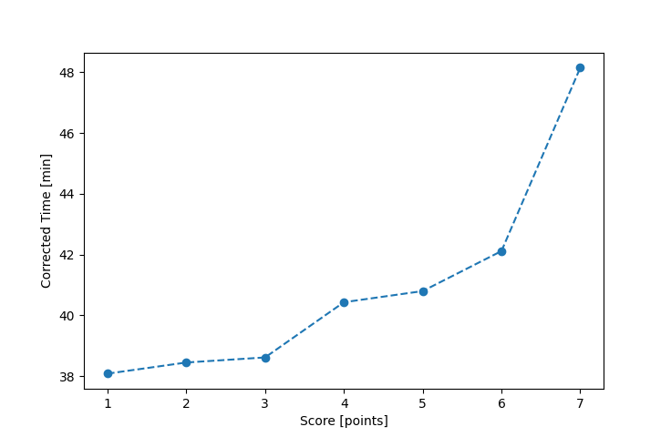

| Wind: | 2-3 (BFT) |
|---|---|
| RC: | Mike_F , Nedra_F , Ali_B |
| Date: | June 24, 2018 |
| Notes: | M3 3 laps, starboard rounding |
| Rank / Score | Name | Boat | Input Time [mm:ss] | Input Offset [mm:ss] | Race Time [mm:ss] | Race Time [s] | Handicap | Corrected Time [s] | Corrected Time [mm:ss] |
|---|---|---|---|---|---|---|---|---|---|
| 1.0 | Rod_H | LASEM | 27:19 | 00:00 | 27:19 | 1639 | 0.97300 | 1684 | 28:04 |
| 2.0 | Ron_F | F5 | 27:44 | 00:00 | 27:44 | 1664 | 0.96600 | 1723 | 28:43 |
| 3.0 | Chris_E | SF | 30:13 | 00:00 | 30:13 | 1813 | 1.00400 | 1806 | 30:06 |
| 4.0 | Bill_P | SF | 30:39 | 00:00 | 30:39 | 1839 | 1.00400 | 1832 | 30:32 |
| 5.0 | David_Bu | SF | 31:26 | 00:00 | 31:26 | 1886 | 1.00400 | 1878 | 31:18 |
| 6.0 | Pat_B | WF | 32:30 | 00:00 | 32:30 | 1950 | 0.91700 | 2126 | 35:26 |
| 7.0 | Lewis_V | BCN | 33:10 | 00:00 | 33:10 | 1990 | 0.87000 | 2287 | 38:07 |
| 8.0 | John_T | US-1 | DNF | -- | -- | -- | -- | -- | DNF |

Application Notes:
All race results are unofficial
View source code at https://github.com/cessnao3/portsmouthracecalc/